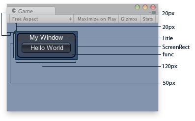

- BeginArea
- BeginHorizontal
- BeginScrollView
- BeginVertical
- Box
- Button
- EndArea
- EndHorizontal
- EndScrollView
- EndVertical
- ExpandHeight
- ExpandWidth
- FlexibleSpace
- Height
- HorizontalScrollbar
- HorizontalSlider
- Label
- MaxHeight
- MaxWidth
- MinHeight
- MinWidth
- PasswordField
- RepeatButton
- SelectionGrid
- Space
- TextArea
- TextField
- Toggle
- Toolbar
- VerticalScrollbar
- VerticalSlider
- Width
- Window
GUILayout.Window 窗口
static function Window (id : int, screenRect : Rect, func : GUI.WindowFunction, text : string, : ) : Rect
static function Window (id : int, screenRect : Rect, func : GUI.WindowFunction, image : Texture, : ) : Rect
static function Window (id : int, screenRect : Rect, func : GUI.WindowFunction, content : GUIContent, : ) : Rect
static function Window (id : int, screenRect : Rect, func : GUI.WindowFunction, text : string, style : GUIStyle, : ) : Rect
static function Window (id : int, screenRect : Rect, func : GUI.WindowFunction, image : Texture, style : GUIStyle, : ) : Rect
static function Window (id : int, screenRect : Rect, func : GUI.WindowFunction, content : GUIContent, style : GUIStyle, : ) : Rect
Parameters参数
-
idA unique ID to use for each window. This is the ID you'll use to interface to it.
用于每个窗口唯一的ID；这是用于接口的ID。 - screenRectRectangle on the screen to use for the window. The layouting system will attempt to fit the window inside it - if that cannot be done, it will adjust the rectangle to fit.
用于窗口的屏幕上的矩形。布局系统将试图适配窗口在他里面。如果不能，它将调整矩形去适配它 - funcThe function that creates the GUI inside the window. This function must take one parameter - the id of the window it's currently making GUI for.
在窗口中创建GUI的函数。这个函数必须带有一个参数 - 当前创建GUI的窗口的ID。 -
textText to display as a title for the window.
用于窗口，作为一个标题显示的文本。 -
imageTexture to display an image in the titlebar.
在标题栏显示一张图片的纹理 -
contentText, image and tooltip for this window.
用于该窗口的文本、图片和工具提示。 -
styleAn optional style to use for the window. If left out, the window style from the current GUISkin is used.
用于窗口的一个可选样式。如果不使用，该窗口使用当前的GUISkin皮肤 -
optionsAn optional list of layout options that specify extra layouting properties. Any values passed in here will override settings defined by the style.
布局选项指定额外布局属性的一个可选列表。这里传递任意值都将覆盖由style定义的设置。
参考： GUILayout.Width, GUILayout.Height, GUILayout.MinWidth, GUILayout.MaxWidth, GUILayout.MinHeight, GUILayout.MaxHeight, GUILayout.ExpandWidth, GUILayout.ExpandHeight
Rect - the rectangle the window is at. This can be in a different position and have a different size than the one you passed in.
返回Rect类型，该window所在的矩形。比你传入的一个，这个可以在一个不同的位置和有一个不同的大小。
Description描述
Make a popup window that layouts its contents automatically.
创建一个弹出窗口，它的内容是自动布局的。
Windows float above normal GUI controls, feature click-to-focus and can optionally be dragged around by the end user. Unlike other controls, you need to pass them a separate function for the GUI controls to put inside the window. Here is a small example to get you started:
这个窗口浮动在普通GUI控件之上，具有单击激活的特点并可选由终端用户拖动。不像其他控件，你需要为GUI控件传递单独的函数放置窗口中。这里是一个小的例子帮你入门：

Window in the Game View.
在游戏视图中的窗口。
using UnityEngine;
using System.Collections;
public class example : MonoBehaviour {
public Rect windowRect = new Rect(20, 20, 120, 50);
void OnGUI() {
windowRect = GUILayout.Window(0, windowRect, DoMyWindow, "My Window");
}
void DoMyWindow(int windowID) {
if (GUILayout.Button("Hello World"))
print("Got a click");
}
}var windowRect : Rect = Rect (20, 20, 120, 50);
function OnGUI () {
// Register the window. Notice the 3rd parameter
//注册窗口，注意第三个参数
windowRect = GUILayout.Window (0, windowRect, DoMyWindow, "My Window");
}
// Make the contents of the window
//创建该窗口的内容
function DoMyWindow (windowID : int) {
// This button will size to fit the window
//这个按钮将适配该窗口
if (GUILayout.Button ("Hello World"))
print ("Got a click");
}The screen rectangle you pass in to the function only acts as a guide. To Apply extra limits to the window, pass in some extra layout options. The ones applied here will override the size calculated. Here is a small example:
你传入函数的屏幕矩形，仅作为一个参考。为了对窗口使用额外的限制，传入一些额外的布局选项，有一个应用到这里，将重写计算大小。这里是一个小例子：
using UnityEngine;
using System.Collections;
public class example : MonoBehaviour {
public Rect windowRect = new Rect(20, 20, 120, 50);
void OnGUI() {
windowRect = GUILayout.Window(0, windowRect, DoMyWindow, "My Window", GUILayout.Width(100));
}
void DoMyWindow(int windowID) {
if (GUILayout.Button("Please click me a lot"))
print("Got a click");
}
}var windowRect : Rect = Rect (20, 20, 120, 50);
function OnGUI () {
// Register the window. Here we instruct the layout system to
// make the window 100 pixels wide no matter what.
//注册窗口，这里我们指示布局系统无论如何使窗口为100像素宽。
windowRect = GUILayout.Window (
0, windowRect, DoMyWindow, "My Window", GUILayout.Width (100));
}
// Make the contents of the window
//创建窗口的内容
function DoMyWindow (windowID : int) {
// This button is too large to fit the window
//这个按钮比限制的窗口大
// Normally, the window would have been expanded to fit the button, but due to
// the GUILayout.Width call above the window will only ever be 100 pixels wide
//通常，这个窗口将被扩展以便适应这个按钮。但是由于GUILayout.Width将只允许窗口为100像素宽
if (GUILayout.Button ("Please click me a lot"))
print ("Got a click");
}